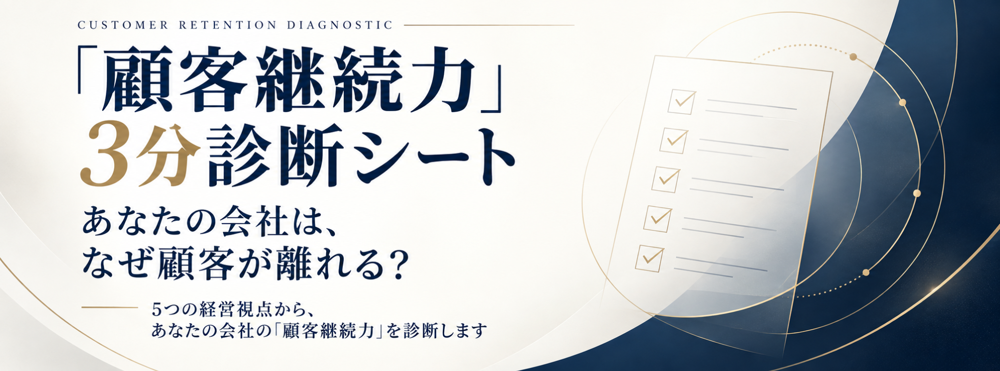

CUSTOMER RETENTION DIAGNOSTIC
約3分 ｜ 全10問 ｜ 無料
「顧客継続力」3分診断シート
あなたの会社は、なぜ顧客が離れる？
顧客が長く付き合ってくれる会社と、
一度購入したら関係が終わってしまう会社。
5つの経営視点から、いまの「顧客継続力」を整理します。
ABOUT THIS DIAGNOSIS
顧客継続力を左右する、
5つの経営ポイント
全10問。5つの視点を2問ずつ確認し、現在地を整理します。
01
継続設計力提供後にも「次に相談する理由」があるか
02
顧客理解力目の前の悩みだけでなく、その先まで理解できているか
03
価値拡張力自社の商品だけに限定せず、選択肢を広げられるか
04
関係拡張力顧客との関係が、本人だけで終わらず広がっていくか
05
顧問ポジション力「まずあなたに相談したい」と思われているか
回答のポイント
「理想ではこうしたい」ではなく、
現在の会社の状態に最も近い回答を直感でお選びください。
現在の会社の状態に最も近い回答を直感でお選びください。
QUESTION 01 / 10
継続設計力
QUESTION
考えるヒント
深く考えすぎず、今の状態に最も近いものをお選びください。
ANALYZING
あなたの顧客継続力を
分析しています…
10の回答を、5つの経営視点に分けて確認しています。
継続設計力
顧客理解力
価値拡張力
関係拡張力
顧問ポジション力
DIAGNOSIS RESULT
あなたの会社の顧客継続タイプは…
顧客継続力スコア
/ 40
5 BUSINESS INDICATORS
5つの経営指標
各指標は2問の合計で、8点満点です。
WHY CUSTOMERS LEAVE
NEXT IMPROVEMENT
あなたの伸びしろ
まず取り組むこと